Select an Apple Wallet pass in Finder, tap Space, and see a Wallet-style card — no double-clicking, no importing, nothing leaves your Mac.
View on GitHub →This page renders three animation technologies side by side — the same kind of motion the README shows off.

Note: the Quick Look preview itself never touches the GPU — a sandboxed preview extension stalls on Metal init, so the plugin renders barcodes on the CPU. WebGPU lives here, in the browser, only.
git clone https://github.com/ArioMoniri/ql-pkpass.git
cd ql-pkpass
make install # builds, installs to /Applications, refreshes Quick LookThen select examples/Skyline-BoardingPass.pkpass in Finder and press Space.